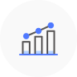

서비스 안내
메뉴설명보험정보
빅데이터
플랫폼이란?
보험과 관련한 다양한 정보를 모았습니다.
보험개발원이 보험사들로부터 제공받아 자체 보유하고 있는 정보와 국내외 여러 기관들의 유용한 자료를 모두 모아서 제공합니다.
다양하고(Variety),
많은(Volume) 보험관련
정보를 신속하게(Velocity)
제공함으로써 새로운
가치(Value)를 창출하는
빅데이터 플랫폼을
지향합니다.
각종 보험통계, 유용한 보험정보, 조회서비스 등을 한 곳에 모아서 보여줌으로써 보험소비자가 쉽고 편리하게 서비스를 이용할 수 있도록 도와줍니다
보험에 관한 모든 것, 보험정보 빅데이터 플랫폼에서 찾아보세요
-
 보험통계조회서비스 (INcos)
50대 주요 보험지표
은퇴시장 통계정보
-
Weekly 보험상식
보험용어사전
공시기준이율
차량기준가액
차량모델등급
광역시도별 교통사고 현황
경미손상 수리기준
자동차보험금 원가지수
국내외 보험 관련기관
-
건강정보에 따른 주요 질환 예측정보
자동차사고이력정보(CarHistory)
과납보험료 및 휴면보험금 조회시스템
내 차보험 찾기
자동차보험 할인할증요인 조회
자동차보험정보 고객센터
대리운전자보험 조회시스템
-
국내보험동향
Monthly KIDI Brief
기업성보험 통계보고서